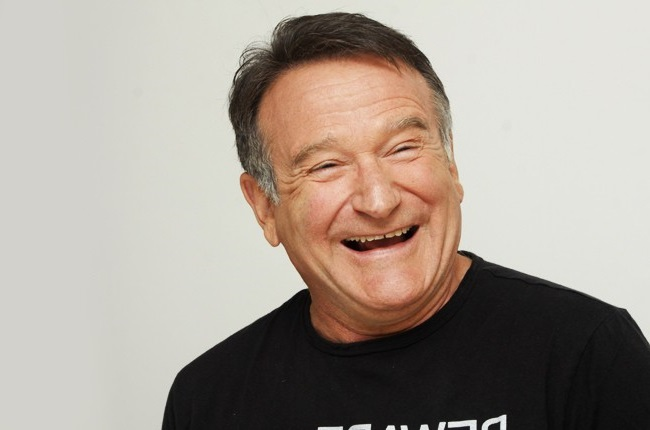

Robin McLaurin Williams
was an American actor and comedian.

Robin McLaurin Williams was an American actor and comedian known for his improvisational skills and a wide variety of voices. He played numerous memorable film roles, both comedic and dramatic, and after three previous nominations, he won an Academy Award for best supporting actor in Good Will Hunting.
The truth is, if anything, I'm probably addicted to laughter.-- Robin Williams
